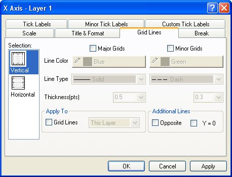

Inhalt |
| Horizontal |
Standardmäßig ist dies die untere und obere X-Achse. Wenn Sie allerdings die X- und Y-Achsen vertauscht haben (Grafik: X-Y-Achsen vertauschen) oder Sie die Achse eines Balken-, Fließendem Balken- oder Gestapeltem Balkendiagramm bearbeiten, ist das horizontale Symbol mit der linken und rechten Y-Achse verbunden. |
|---|---|
| Vertikal |
Dies ist standardmäßig die linke und rechte Y-Achse. Wenn Sie allerdings die X- und Y-Achsen vertauscht haben (Grafik: X-Y-Achsen vertauschen) oder Sie die Achse eines Balken-, Fließendem Balken- oder Gestapeltem Balkendiagramm bearbeiten, ist das vertikale Symbol mit der linken und rechten X-Achse verbunden. |
| Z-Achsen |
Dies sind standardmäßig die vordere und hintere Z-Achse. |
Nachdem Sie die Bearbeitung der Achseneigenschaften abgeschlossen haben, können Sie jede beliebige andere Achse in Ihrem Diagramm bearbeiten, indem Sie das entsprechende Symbol im Listenfeld Auswahl auswählen. Um zu verhindern, dass Ihre Auswahl auf das Diagramm angewendet wird, klicken Sie auf die Schaltfläche Abbrechen zu jeder beliebigen Zeit während des Bearbeitungsprozesses (aber vor dem Klicken auf Anwenden).
Wählen Sie die das Kontrollkästchen Gitternetzlinien, um die aktuelle Auswahl in den Auswahllisten Farbe und Art und dem Kombinationsfeld Stärke (Pkt) auf die Hauptlinien und Nebenlinien in: Dieses Layer, Dieses Fenster oder Alle Fenster (im aktuellen Projekt) anzuwenden.